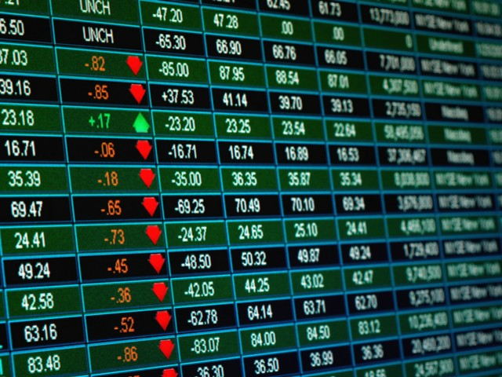

What is a Stock Screener?
Have you ever wondered how some investors seem to find the best stocks out
there, while others struggle to find attractive investment opportunities? You
may think it's luck but it's not! Certain tools can help you find stocks that fit
your investment criteria and help you invest in lucrative stock markets. One
such tool is a stock screener, which is a tool that helps you quickly sort
through hundreds or thousands of stocks to find the ones that match your
criteria.
A stock screener can be especially useful for investors looking to invest in the
stock markets as well as the crypto markets. Crypto screeners are similar to
traditional stock screeners but use different criteria to find the best
investments. In this article, we will be digging deep into stock and crypto
screeners. We will be looking at what they are, how they work, and which is
the best screener for you.
So if you are interested in learning more about stock and crypto screeners
then this article is for you!
What is a Stock Screener?
As the name suggests, a stock screener is a tool that helps you screen stocks.
It allows you to filter stocks based on certain criteria and find the ones that
match your investment strategy. In simple words, stock screeners are a way to
filter stocks so that you can easily find the ones that fit your investment goals.
Stock screeners work by giving you different criteria to choose from, such as
price, market cap, dividend yield, and more. You can then select the criteria
that are most important to you and use them to filter through hundreds or even
thousands of stocks. This way, you can easily find the ones that fit your
investment strategy.
There are many different stock screeners available online, and they all have
different features. You can easily find one on most trading platforms for free.
However, there are paid options as well that offer more features and flexibility
while sorting stocks.
Stock screeners are an essential tool for any investor, whether you're a
beginner or a seasoned pro. They can help you save time and find the best
stocks for your investment strategy. So if you're not using one already, make
sure to start today.
How do stock screeners work?
Understanding how stock screeners work is pretty straightforward! Generally,
a stock screener will ask you to enter a series of criteria that you're looking for
in stock such as
Price
Market capitalization
Dividend yield
52 weeks high/low
P/E ratio
And more!
The stock screener will now start to sort through all of the available stocks in
the market and find ones that meet your specific criteria. This makes it much
easier to quickly filter through thousands of companies and find a handful that
matches your individual investing goals
Whether you are a beginner, fundamental or technical investor, stock
screeners can be a great tool to help you find the right stocks for your
portfolio.
For example, let's say, you are a long-term growth investor and are looking for
companies with a
Or, let's say you are a fundamental investor looking for
You can easily find these stocks using a stock screener without spending
hours going through all the companies one by one! You just have to enter your
criteria, and the screener will do all the hard work for you!

Introduction to crypto screeners
The crypto market is currently booming right now! And with that, there's been
an influx of new investors who are looking to get their feet wet in the crypto
world. But just like stocks, there are thousands of different cryptocurrencies
out there, and it can be pretty overwhelming trying to figure out which ones
are worth investing in.
And in addition, cryptocurrencies tend to be a bit more volatile and speculative
than stocks, making it even more difficult to choose the right ones for your
portfolio. That's where crypto screeners come in! Similar to stock screeners,
crypto screeners allow you to filter through all the available cryptocurrencies
and find the ones that match your specific investing criteria.
For example, let's say you're looking for a cryptocurrency with a
Low price
Crossover signals
High volume
Moving averages
Fundamentals
Now you just have to enter the criteria you're looking for into the crypto
screener, and it will filter through all the available cryptocurrencies to find ones
that meet your specific criteria.
What are the benefits of using a stock and crypto screener?
So now that we know one or two things about how stock and crypto
screeners, let's talk about some of the benefits these tools can offer:
1. It saves time
One of the key benefits of using a stock or crypto screener is that it saves you
time and effort in finding the best investments for your portfolio. If you have
been investing for a while, you must know how time-consuming it can be to
manually go through all the stocks or cryptocurrencies one by one. And if
you're a beginner, it can be pretty overwhelming trying to figure out which
ones are worth investing in. But when you use stock screeners, they eliminate
this tedious process and make it much easier to find investments that match
your individual investing goals.
2. It allows you to narrow down potential investments quickly
There are hundreds of thousands of different stocks and cryptocurrencies out
there, which can make it difficult to choose the right ones for your portfolio. But
with a stock or crypto screener, you can easily filter through all these different
types of investments to find the ones that match your specific criteria. Whether
you're looking for high growth potential, low volatility, or specific fundamentals,
stock and crypto screeners make it easy to find the right investments for you.
3. Helps you find new investment opportunities
When you are trading, you don't want to stick to a single type of investment.
Constantly finding new opportunities is crucial to success in the market. And
one of the best ways to find new investment opportunities is by using stock
and crypto screeners. By regularly using these tools, you can easily find
stocks or cryptocurrencies that you might have otherwise missed.
4. Keeps you updated on the latest market trends
Stock and especially the crypto market are ever-changing and dynamic. New
opportunities are constantly emerging, and it can be difficult to keep up with all
the latest trends. But by using stock and crypto screeners, you can easily stay
updated on all the latest market trends and find investment opportunities that
match your criteria. When it comes to investing, you don't want to stay behind
– being always up-to-date is crucial for success
So these are some of the key benefits of using stock and crypto screeners.
Now that we know about the benefits let's take a look at an example of a stock
and crypto screener.
Screener+
Screener+ is one of the most advanced yet easy-to-use stock and crypto
screeners in the market. It offers a wide range of features that makes it a
valuable tool for both experienced and beginner investors. It is a subscriptionbased service with different plans starting from just $15 a month.
From some of the most advanced features like backtesting to simple tools like
stock filtering, Screener+ has everything you need to find the best investment
opportunities in the market.
Screener+ features
Let's take a look at some of the key features offered by Screener+, including:
1. Access to enterprise-grade financial data:
some of the biggest financial data providers in the world, including Tingo.com.
This means you have access to high-quality research data that can help you
find the best investment opportunities.
2. Multiple filtering options:
Screener+ offers a wide range of filtering
options that you can use to find stocks or cryptocurrencies that match your
specific criteria. You can easily sort a handful of stocks or cryptocurrencies
from thousands of options in just a few clicks.
3. Backtesting:
Backtesting is a really important feature, especially for
experienced investors. It allows you to test your investing strategies on
historical data to see how they would have performed. This can help you
improve your investment strategies and find better opportunities in the market
4. Unlimited watchlist:
With Screener+, you can create an unlimited number
of watchlists for all your favorite stocks or cryptocurrencies. You can get future
updates and price alerts for any stocks or cryptocurrencies you track.
5. Create custom screens:
Another great feature of Screener+ is that you
can create custom screens. This means you can easily find stocks or
cryptocurrencies that match your specific investment criteria so you can save
time and focus on the best investment opportunities.
6. Access to both stock and cryptos:
Screener+ is one of the few screeners
in the market that offers access to both stocks and cryptocurrencies. So
whether you're looking for traditional investments or want to get into the
exciting world of cryptocurrencies, Screener+ has you covered.
7. Easy-to-use interface:
One of the best things about Screener+ is that it
has a very user-friendly interface. You don't need to be an expert investor to
use this tool – anyone can easily find and track the best stocks or
cryptocurrencies in just a few clicks.
If you are looking for a powerful yet easy-to-use stock or crypto screener,
Screener+ is a great option to consider. With its wide range of features and
options, it can be a valuable tool for both beginner and experienced investors.
Final thoughts
Stock screeners are one of the most useful tools for investors. From saving
time to helping you find better investment opportunities, stock screeners can
offer a lot. Whether it is stocks or cryptocurrencies, these tools are a musthave for any investor who wants to stay ahead of the market.